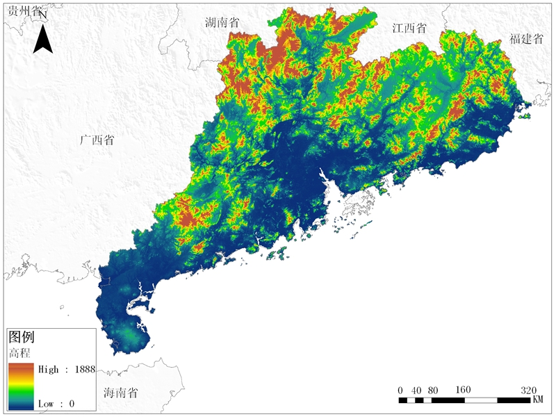
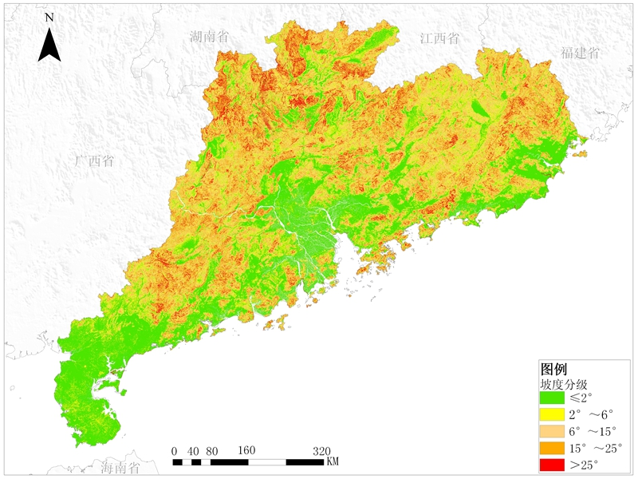

<!DOCTYPE html>
<html lang="zh-CN" id="environmental_enements">

<head>
  <base href="/iapis/" />
  <meta charset="UTF-8" />
  <meta name="viewport" content="width=device-width, initial-scale=1.0" />
  <title>环境要素-广东省外来入侵植物数据库及风险评估系统</title>
  <link rel="icon" href="images/favicon.ico" type="image/x-icon" />
  <link rel="stylesheet" href="css/main_style.css" />
  <link rel="stylesheet" href="css/enements_style.css" />
  <!-- <script src="//webapi.amap.com/maps?v=2.0&key=af623eef450ea6e447829438b62a1168"></script> -->
  <!-- <script src="//webapi.amap.com/ui/1.1/main.js"></script> -->
  <script src="js/master_page.js"></script>
  <!-- <script src="js/enement_map.js"></script> -->
  <script src="js/jquery.js"></script>
  <!-- <script src="js/echarts.min.js"></script> -->
  <!-- <script src="js/database.js"></script> -->
</head>

<body>
  <script>
    createhead();
  </script>
  <div id="frame" class="heart">
    <!-- <iframe src="enchart.html" frameborder="0"></iframe> -->
    <!-- <div class="b pic geoimg heart"> -->
      <!--  -->
    <!-- </div> -->
    <!-- <div class="c pic geoimg po heart">
      
    </div> -->
  </div>
  <script>
    $(function () {
      if(getUrlParam("sel") == "a"){
        $("#frame").append("<iframe src='enchart.html' frameborder='0'></iframe>")
      } else if(getUrlParam("sel") == "b"){
        $("#frame").append("<div class='b pic geoimg heart'></div>");
      } else if(getUrlParam("sel") == "c"){
        $("#frame").append("<div class='b pic geoimg heart'></div>");

      }
      // recreate();
      // $(".selectbox").change(recreate);
    });
    
    function getUrlParam(name) {
      var reg = new RegExp("(^|&)" + name + "=([^&]*)(&|$)"); //构造一个含有目标参数的正则表达式对象
      var r = window.location.search.substr(1).match(reg); //匹配目标参数
      if (r != null) return unescape(r[2]);
      return null; //返回参数值
    }

    // function recreate() {
    //   createEvmtMap($(".selectbox").find("option:selected").val(), "json/environment_map_options.json");
    // }
  </script>
  <script>
    createtail();
  </script>
</body>

</html>